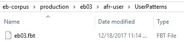

OCR Tab
Settings for the OCR tab in the ABBYY FineReader Options window.
To access the Options windown, select .
- For PDF recognition mode, select Use OCR.
- Set OCR speed and accuracy to Thorough recognition. Set Document type to auto.
- Uncheck everything in Detection of structural elements and Barcodes.
-
Set Use of patterns and training in OCR Editor to . See remarks in OCR Training.
-
>ABBYY FineReader needs to know where to locate the shared
user patterns and language files for the edition. Select Load
Patterns and Languages.... Navigate to the
_afr-user/UserPatterns folder in the edition folder,
and select the FBT file located there. For example, if you are working on eb03,
it will be located in ebnn/eb03/_afr-user/UserPatterns.

- Click OK when finished, to save all settings in the Options window.